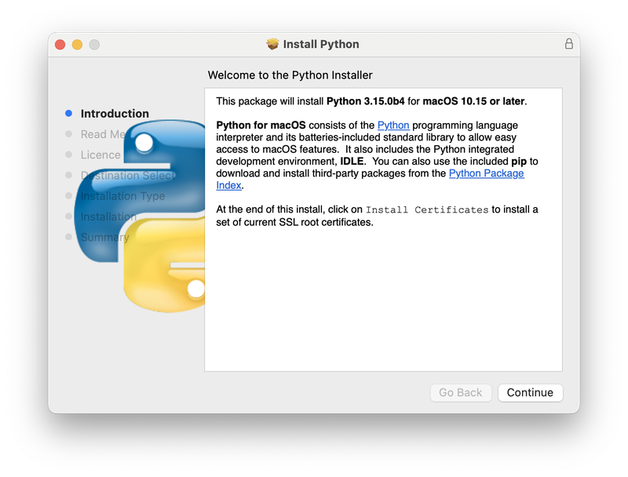
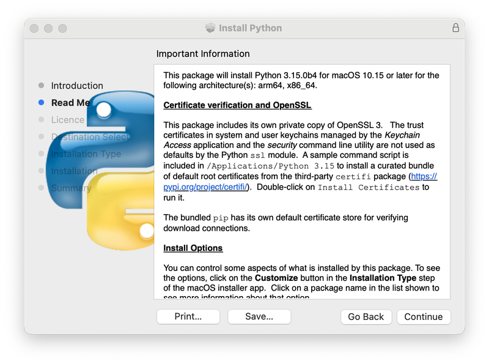
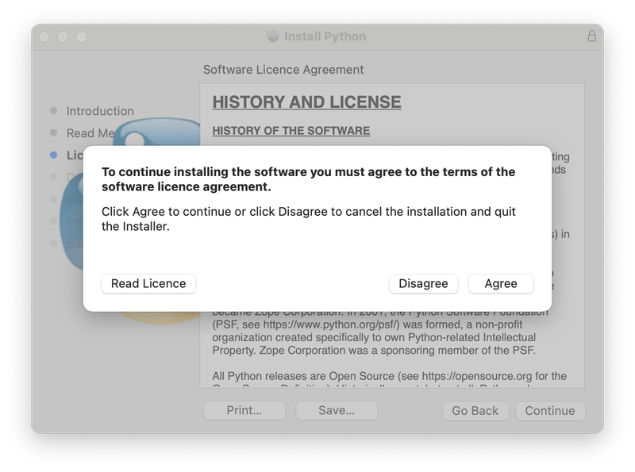
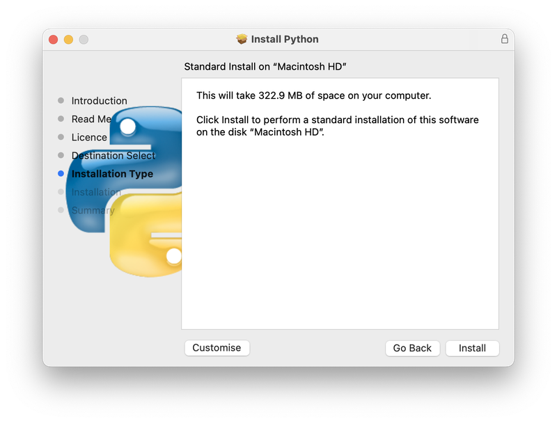
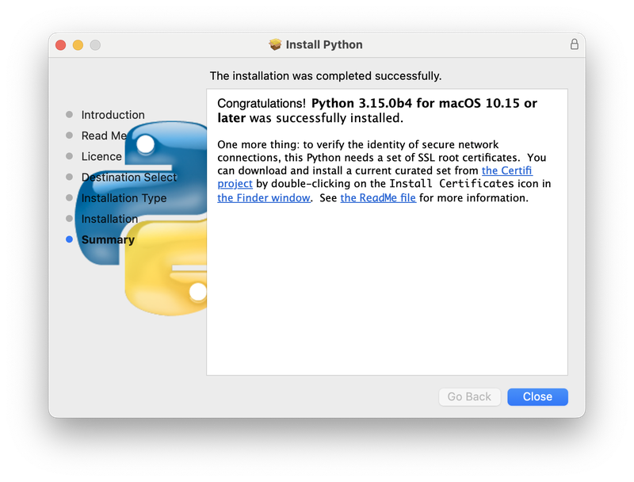
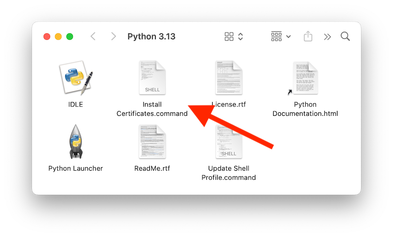
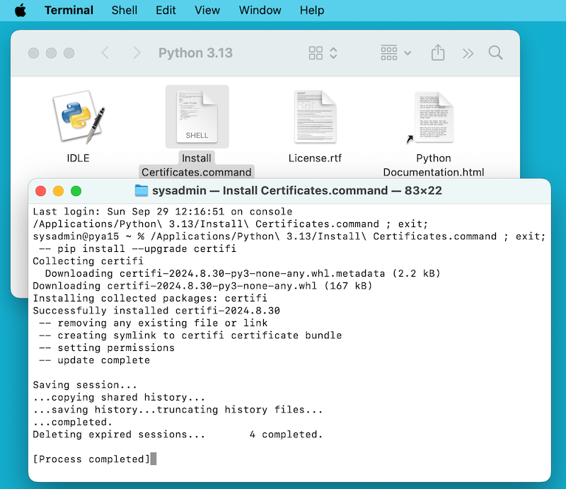
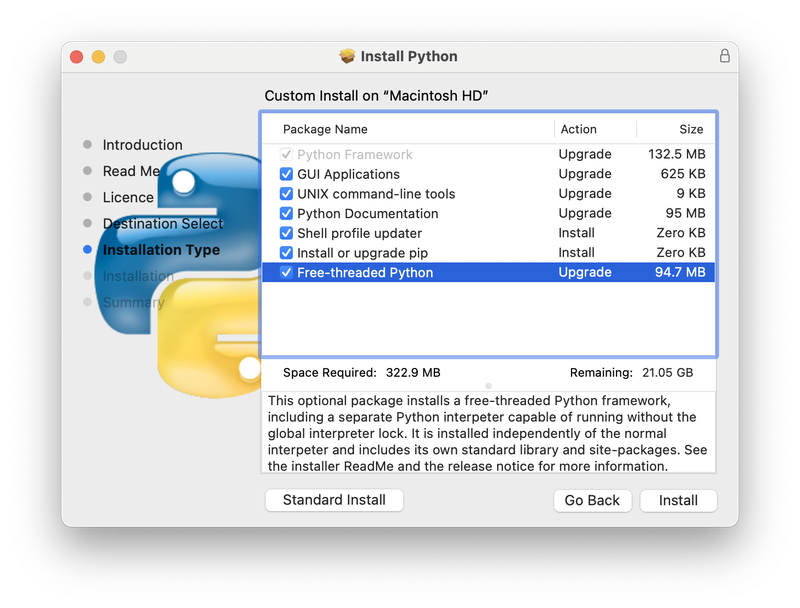

5. Usando Python em macOS¶
Este documento tem o objetivo de fornecer uma visão geral dos comportamentos específicos do macOS que você deve conhecer para começar a usar o Python em computadores Mac. O Python em um Mac com macOS é muito semelhante ao Python em outras plataformas derivadas do Unix, mas há algumas diferenças na instalação e alguns recursos.
Há várias maneiras de obter e instalar o Python para macOS. Versões pré-construídas das versões mais recentes do Python estão disponíveis em vários distribuidores. Grande parte deste documento descreve o uso dos Pythons fornecidos pela equipe de lançamento do CPython, disponíveis para download no site python.org. Consulte Distribuições alternativas para conhecer outras opções.
5.1. Usando Python para macOS do python.org¶
5.1.1. Etapas de instalação¶
Para as versões atuais de Python (exceto as com status security), a equipe de lançamento produz um pacote de instalação Python para macOS em cada novo lançamento. Uma lista dos instaladores disponíveis é fornecida na página de downloads de macOS. Recomendamos usar a versão suportada mais recente de Python sempre que possível. Os instaladores atuais fornecem uma versão de Python como binário universal 2 que é executado nativamente em todos os Macs (Apple Silicon e Intel) compatíveis com uma ampla gama de versões do macOS, atualmente do macOS 10.15 Catalina em diante.
O arquivo baixado é um arquivo padrão de pacote de instalação do macOS (.pkg). As informações de integridade do arquivo (tal como a soma de verificação, tamanho e assinatura de Sigstore) de cada arquivo estão inclusas na página de download dos lançamentos. Os pacotes de instalação e seus conteúdos são assinados e autenticados com certificados Apple Developer ID Python Software Foundation para atender aos requisitos do macOS Gatekeeper.
Para uma instalação padrão, clique duas vezes no arquivo baixado de pacote de instalação. Isso deverá abrir o aplicativo padrão de instalação do macOS e exibir o primeiro de vários passos de instalação.

Ao clicar no botão Continuar, é exibido o Read Me desse instalador. Além de outras informações importantes, o Read Me documenta qual versão de Python será instalada e em quais versões do macOS ele é compatível. Talvez você precise rolar a tela para ler o arquivo inteiro. Por padrão, esse Read Me também será instalado em /Applications/Python 3.15/ e estará disponível para leitura a qualquer momento.

Ao clicar em Continuar, o instalador exibe a licença do Python e de outros softwares incluídos. Você precisará Concordar com os termos da licença antes de prosseguir para a próxima etapa. Esse arquivo de licença também será instalado e estará disponível para leitura a qualquer momento.

Após aceitar os termos da licença, a próxima etapa será a tela Tipo de instalação. Para a maioria dos usos, o conjunto padrão de operações de instalação é adequado.

Ao pressionar o botão Customize, você pode optar por omitir ou selecionar determinados componentes de pacote do instalador. Clique em cada nome de pacote para ver uma descrição do que ele instala. Para detalhes sobre o recurso opcional de threads livres, o qual é instalado por padrão, consulte Instalando binários com threads livres.
Em ambos os casos, clicar em Instalar iniciará o processo de instalação solicitando a permissão para instalar um novo software. É necessário um nome de usuário do macOS com privilégio de Administrador, pois o Python instalado estará disponível para todos os usuários do Mac.
Quando a instalação for concluída, a janela Resumo será exibida.

Clique duas vezes no ícone ou arquivo Install Certificates.command na janela /Applications/Python 3.15/ para concluir a instalação.

Isso abrirá uma janela temporária do console Terminal que usará o novo Python para baixar e instalar certificados raiz SSL para seu uso.

Se Successfully installed certifi e update complete aparecerem na janela do terminal, a instalação estará concluída. Feche essa janela do terminal e a janela do instalador.
Uma instalação do padrão incluirá:
Uma pasta
Python 3.15em sua pastaApplications. Aqui você encontra o IDLE, o ambiente de desenvolvimento que é parte das distribuições oficiais do Python; e o Python Launcher, que executa scripts Python quando são clicados duas vezes dentro do Finder .Uma framework
/Library/Frameworks/Python.framework, que inclui o executável Python e suas bibliotecas. O instalador adiciona esse local ao seu path do console. Para desinstalar o Python, você pode remover esses três itens. É um link simbólico para o executável Python armazenado na pasta/usr/local/bin/.
Nota
As versões recentes do macOS incluem um comando python3 em /usr/bin/python3 que aponta para uma versão geralmente mais antiga e incompleta de Python fornecida por e para uso pelas ferramentas de desenvolvimento da Apple, Xcode ou o Command Line Tools for Xcode. Você nunca deve modificar ou tentar excluir essa instalação por ser controlada pela Apple e é usada por softwares da Apple ou de terceiros. Se você optar por instalar uma versão mais recente do Python a partir de python.org, você terá duas instalações diferentes, mas funcionais, de Python no computador que podem coexistir. As opções do instalador padrão devem garantir que o comando python3 seja usado em vez do python3 do sistema.
5.1.2. Como executar um script Python¶
Há duas maneiras de invocar o interpretador Python. Se você estiver familiarizado com o uso de um console Unix em terminal, você pode invocar python3.15 ou python3, opcionalmente seguido por uma ou mais opções da linha de comando (descritas em Linha de comando e ambiente). O tutorial de Python também tem uma seção útil sobre o uso interativo do Python a partir de um console.
Você também pode invocar o interpretador por um ambiente de desenvolvimento integrado (IDE). O IDLE — Editor e console Python é um editor e ambiente de desenvolvimento básico incluído com a distribuição padrão de Python. IDLE inclui um menu Ajuda que te permite acessar a documentação de Python. Se você for completamente iniciante em Python, você pode ler o tutorial de introdução na documentação.
Há muitos outros editores e IDEs disponíveis. Consulte Editores e IDEs para mais informações.
Para executar um script Python na janela do terminal, você pode invocar o interpretador com o nome do arquivo de script:
python3.15meuscript.py
Para executar seu script a partir do Finder, você pode:
Arrastá-lo para o Python Launcher.
Selecione Python Launcher como a aplicação padrão para abrir seu script (ou qualquer script
.py) na janela de informações Finder Info, e clique duas vezes nele. O Python Launcher tem várias preferências para controlar como o script é iniciado. Você pode arrastar opções para alterá-las por uma invocação, ou usar o menuPreferênciaspara alterar configurações globalmente.
Saiba que executar o script diretamente do Finder pode produzir resultados diferentes daqueles obtidos em uma janela de terminal, pois o script não será executado no ambiente normal do console, incluindo qualquer configuração de variáveis de ambiente nos perfis do console. E, como em qualquer outro script ou programa, certifique-se do que está prestes a executar.
5.2. Distribuições alternativas¶
Além do instalador padrão do python.org para macOS, existem distribuições de terceiros para macOS que podem incluir funcionalidades adicionais. Algumas distribuições populares e seus recursos-chave são:
- ActivePython
Instalador com compatibilidade multiplataforma, documentação
- Anaconda
Módulos científicos populares (como numpy, scipy e pandas) e o gerenciador de pacotes
conda.- Homebrew
Gerenciador de pacotes para macOS que inclui várias versões do Python e muitos pacotes Python de terceiros (incluindo numpy, scipy e pandas).
- MacPorts
Outro gerenciador de pacotes para macOS, incluindo várias versões de Python e muitos pacotes Python de terceiros. Pode incluir versões pré-construídas do Python e muitos pacotes para versões mais antigas do macOS.
Note que distribuições podem não incluir versões mais recentes de Python ou de outras bibliotecas, e não são mantidas ou providas pela equipe do Python.
5.3. Instalar pacotes Python adicionais¶
Consulte o Guia de Usuário para Empacotamento de Python para mais informações.
5.4. Programação de GUI¶
Existem várias opções para criar aplicações GUI no Mac com Python.
O kit de ferramentas GUI padrão de Python é o módulo tkinter, baseado no kit de ferramentas multiplataforma Tk (https://www.tcl.tk). Uma versão nativa do Tk para macOS está incluída no instalador.
O PyObjC é uma ligação em Python para o Objective-C/Cocoa da Apple framework. Informações sobre o PyObjC estão disponíveis em pyobjc.
Há vários kits de ferramentas GUI alternativas disponíveis para o macOS, incluindo:
PySide: Ligações oficiais em Python ao kit de ferramentas Qt GUI .
PyQt: Ligações alternativas em Python ao Qt.
Kivy: Um kit de ferramentas GUI multiplataforma que dá suporte a plataformas de desktop e dispositivos móveis.
Toga: Parte do BeeWare Project; dá suporte a aplicativos para desktop, dispositivos móveis, Web e console.
wxPython: Um kit de ferramentas multiplataforma que dá suporte a sistemas operacionais desktop.
5.5. Tópicos avançados¶
5.5.1. Instalando binários com threads livres¶
Adicionado na versão 3.13.
Alterado na versão 3.15: O suporte a threads livres é agora instalado por padrão.
O pacote de instalação do Python para macOS em python.org pode instalar, por padrão, uma construção adicional do Python 3.15 que dá suporte a threads livres (executar com a trava global do interpretador desativada). Verifique a página de versões em python.org para obter informações atualizadas.
O modo com threads livres está funcionando e continua sendo aprimorado, mas há alguma sobrecarga adicional em cargas de trabalho de thread única em comparação com a construção regular. Além disso, pacotes de terceiros, em particular aqueles com um módulo de extensão, podem não estar prontos para uso em uma construção com threads livres e reativarão a GIL. A partir do Python 3.15. o suporte para threads livres é instalado por padrão. Ele é fornecido no pacote como uma opção de instalação separada, que pode ser desmarcada clicando no botão Customize na etapa Installation Type do instalador, conforme descrito acima.

Se a caixa ao lado do nome do pacote Free-Threaded Python for marcada (pois é o padrão), um arquivo PythonT.framework também será instalado junto ao arquivo Python.framework em /Library/Frameworks. Essa configuração permite que a compilação de Python 3.15 com threads livres coexista no seu sistema com a compilação de Python 3.15 tradicional (com GIL) com risco mínimo durante instalação ou testagem. Esse layout de instalação pode mudar em lançamentos futuros.
Precauções e limitações conhecidas:
O pacote Unix command-line tools, que é selecionado por padrão, instalará links em
/usr/local/binparapython3.15t, o interpretador com threads livres epython3.15t-config, um utilitário de configuração que pode ser útil para criadores de pacote. Como/usr/local/biné normalmente incluído em seuPATHdo console, geralmente não é necessário alterar a variável de ambiente doPATHpara usar opython3.15t.Neste lançamento, o pacote Shell profile updater e o comando
Update Shell Profile.commandem/Applications/Python 3.15/não dão suporte ao pacote com threads livres.A construção com threads livres e a compilação tradicional têm caminhos de pesquisa separados e diretórios
site-packagesseparados, portanto, por padrão, se você precisar de um pacote disponível em ambas construções, talvez seja necessário instalá-lo em ambos. O pacote com threads livres instalará uma instância separada do pip para uso com opython3.15t.Para instalar um pacote usando pip sem um venv:
python3.15t -m pip install <package_name>
Ao trabalhar com vários ambientes Python, geralmente é mais seguro e mais fácil criar e usar ambientes virtuais. Isso pode tanto evitar possíveis conflitos de comandos, quanto evitar a confusão sobre qual Python está sendo usado:
python3.15t -m venv <venv_name>
e, em seguida, activate.
Para executar uma versão do IDLE com threads livres:
python3.15t -m idlelib
Os interpretadores em ambos as construções respondem às mesmas variáveis de ambiente PYTHON, o que pode gerar resultados inesperados, por exemplo, se você tiver
PYTHONPATHdefinido em um perfil de console. Se necessário, há opções de linha de comando como-Epara ignorar essas variáveis de ambiente.A construção com threads livres é ligada às bibliotecas compartilhadas de terceiros, como
OpenSSLeTk, instaladas no framework tradicional. Isso significa que ambas as compilações também compartilham um conjunto de certificados, como instalados pelo script Install Certificates.command, portanto, ele só precisa ser executado uma vez.Se você não puder depender do link em
/usr/local/binapontando parapython3.15tcom threads livres dopython.org(por exemplo, se quiser instalar sua própria versão lá ou se alguma outra distribuição instalá-lo lá), você poderá definir explicitamente sua variável de ambiente de consolePATHpara incluir o diretório da frameworkPythonTbin:export PATH="/Library/Frameworks/PythonT.framework/Versions/3.15/bin":"$PATH"
A instalação tradicional do framework por padrão faz algo semelhante, exceto pelo arquivo
Python.framework. Observe que ter dois diretóriosbindo framework emPATHpode gerar confusão se houver nomes duplicados, comopython3.15, em ambos; qual deles é realmente usado depende da ordem em que aparecem emPATH. Os comandoswhich python3.xouwhich python3.xtpode mostrar qual caminho está sendo usado. Usar ambientes virtuais pode ajudar a evitar essas ambiguidades. Outra opção pode ser criar um alias no console para o interpretador desejado, como:alias py3.15="/Library/Frameworks/Python.framework/Versions/3.15/bin/python3.15" alias py3.15t="/Library/Frameworks/PythonT.framework/Versions/3.15/bin/python3.15t"
5.5.2. Instalação usando a linha de comando¶
Se você quiser usar automação para instalar o pacote de instalação python.org (em vez de usar o aplicativo GUI Installer do macOS), o utilitário para linha de comando installer permite que você selecione opções que não sejam do padrão. Se você não estiver familiarizado com o installer, ele pode ser um tanto enigmático (consulte man installer para obter mais informações). Como exemplo, o seguinte trecho de console mostra uma maneira de fazer isso, usando a versão 3.15.0b2 e desmarcando a opção de interpretador com threads livres:
RELEASE="python-3.150b2-macos11.pkg"
# download installer pkg
curl -O https://www.python.org/ftp/python/3.15.0/${RELEASE}
# create installer choicechanges to customize the install:
# disable the PythonTFramework-3.15 package
# while accepting the other defaults (install all other packages)
cat > ./choicechanges.plist <<EOF
<?xml version="1.0" encoding="UTF-8"?>
<!DOCTYPE plist PUBLIC "-//Apple//DTD PLIST 1.0//EN" "http://www.apple.com/DTDs/PropertyList-1.0.dtd">
<plist version="1.0">
<array>
<dict>
<key>attributeSetting</key>
<integer>0</integer>
<key>choiceAttribute</key>
<string>selected</string>
<key>choiceIdentifier</key>
<string>org.python.Python.PythonTFramework-3.15</string>
</dict>
</array>
</plist>
EOF
sudo installer -pkg ./${RELEASE} -applyChoiceChangesXML ./choicechanges.plist -target /
Após a instalação padrão, você pode testar as duas construções disponíveis com algo como:
$ # test that the free-threaded interpreter was installed if the Unix Command Tools package was enabled $ /usr/local/bin/python3.15t -VV Python 3.15.0b2 free-threading build (v3.15.0b2:3a83b172af, Jun 5 2024, 12:57:31) [Clang 15.0.0 (clang-1500.3.9.4)] $ # and the traditional interpreter $ /usr/local/bin/python3.15 -VV Python 3.15.0b2 (v3.15.0b2:3a83b172af, Jun 5 2024, 12:50:24) [Clang 15.0.0 (clang-1500.3.9.4)] $ # test that they are also available without the prefix if /usr/local/bin is on $PATH $ python3.15t -VV Python 3.15.0b2 free-threading build (v3.15.0b2:3a83b172af, Jun 5 2024, 12:57:31) [Clang 15.0.0 (clang-1500.3.9.4)] $ python3.15 -VV Python 3.15.0b2 (v3.15.0b2:3a83b172af, Jun 5 2024, 12:50:24) [Clang 15.0.0 (clang-1500.3.9.4)]
Nota
Os instaladores atuais do python.org só instalam em locais fixos, como /Library/Frameworks/, /Applications e /usr/local/bin. Não é possível usar a opção -domain do installer para instalar em outros locais.
5.5.3. Distribuindo aplicações Python¶
Existe uma variedade de ferramentas para converter seu código Python em uma aplicação distribuível independente:
py2app: Oferece suporte à criação de pacotes
.appdo macOS a partir de um projeto Python.Briefcase: Parte do BeeWare Project; uma ferramenta de empacotamento multiplataforma que permite criar bundles
.appno macOS, além de gerenciar assinaturas digitais e a notarização.PyInstaller: Uma ferramenta de empacotamento multiplataforma que cria um único arquivo ou pasta como um artefato distribuível.
5.5.4. Conformidade com a App Store¶
As aplicações enviadas para distribuição pela macOS App Store devem passar pelo processo de revisão de aplicativos da Apple. Esse processo inclui um conjunto de regras de validação automatizadas que inspecionam o pacote de aplicativos enviado em busca de código problemático.
A biblioteca padrão do Python contém alguns códigos que violam essas regras automatizadas. Embora essas violações pareçam ser falsos positivos, as regras de revisão da Apple não podem ser contestadas. Portanto, é necessário modificar a biblioteca padrão do Python para que uma aplicação passe na revisão da App Store.
A árvore de fontes do Python contém um arquivo de patch que removerá todo o código que é conhecido por causar problemas no processo de revisão da App Store. Este patch é aplicado automaticamente quando o CPython é configurado com a opção --with-app-store-compliance.
Este patch normalmente não é necessário para usar o CPython em um Mac; nem é necessário se você estiver distribuindo uma aplicação fora da App Store do macOS. É necessário apenas se você estiver usando a App Store do macOS como canal de distribuição.
5.6. Outros recursos¶
A página de ajuda do python.org contém links para vários recursos úteis. A lista de discussão Pythonmac-SIG é outro recurso específico de suporte para usuários e desenvolvedores de Python no Mac.